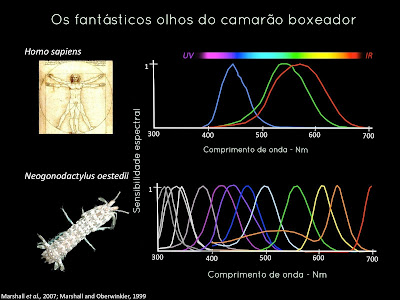

Stomatopoda, Odontodactylus scyllarus
Stomatopoda, Odontodactylus scyllarus

Stomatopoda, Odontodactylus scyllarus mostrando a escama lateral, olhos e apêndices raptoriais

Stomatopoda, Odontodactylus scyllarus dentro de sua toca
Stomatopoda, Odontodactylus scyllarus chamados popularmente de tamarutacas ou de lacraias-do-mar no Brasil, é a uma ordem de crustáceos marinhos da subclasse Hoplocarida pertencente a classe Malacostraca, do subfilo Crustacea, do filo Arthropoda, diretamente do reino Animalia.
Conhecido também como lagosta boxeadora, ficou bem conhecido pela sua incrivel visão. Esses animais possuem o mais complexo sistema de visão de cores do mundo animal, possuindo, no total, 16 cones recepetores de luz - para efeito de comparação, o ser humano possui apenas 3 - podendo assim enxergar 10^24 cores, ou seja, 1 septilhão de cores, enquanto o ser humano, apenas 1 milhão.
O camarão mantis tem uma das melhores visões que se conhece: esses crustáceos possuem um dos sistemas visuais mais sofisticados, senão o mais sofisticado de todo o reino animal.
Seus olhos se movem girando independentemente um do outro em uma amplitude que lhes permite oferecer uma visão de 360°. Cada olho é composto de três seções, cada uma com uma pseudo-pupila independente. Com funções semelhantes às das pupilas humanas, permitem-lhe efectuar uma triangulação do objecto visualizado e saber com precisão a sua distância e profundidade, utilizando apenas um olho: a sua córnea em três bandas dá a cada olho uma visão tridimensional, em relevo.
Seus olhos também são particularmente desenvolvidos para ver a luz polarizada circularmente, convertendo-a em polarização linear. Isso permite que eles se comuniquem com seus congêneres, produzindo eles próprios luz polarizada. Com efeito, certas espécies muito territoriais podem assim indicar aos seus semelhantes que o seu esconderijo está ocupado, evitando assim um possível confronto. Espectro de luz visível humana vs. do Stomatopoda
Os camarões boxeadores são criaturas em sua grande maioria, ativos durante o dia e se recolhem durante a noite para descansar, embora espécies noturnas também sejam comuns. Vivem em tocas escavadas no solo, ou roubadas de algum outro animal como peixe, ou como de costume, roubada de um outro camarão boxeador.
São seres muito pouco sociáveis, agressivos e frequentemente violentos. Protegem suas moradias mantendo-se alerta na entrada desta, sendo possível avistar somente sua cabeça e antenas para fora de sua casa. Logo após conseguir uma moradia, fazem melhoramentos constantes, escavando galerias e mais galerias que chegam a ser profundas e por entre os corais, recolhendo conchas e fazendo estas de suporte e retirando areia destas tocas por meio de rápidos movimentos com seus vários pares de pleópodes, ou seja, patas adaptadas para a natação.
Geralmente preferem esperar por suas vítimas virem até ele, e então afastando-se pouco ou nada de sua toca a capturam e matam por meio de golpes as suas vítimas.
No que diz respeito ao comportamento destas feras, é que são criaturas agressivas e territoriais. Não aceitam invasores ou transeuntes nas imediações de suas tocas... Todos são expulsos das proximidades violentamente, sendo muitas vezes atacados com golpes ou então investidas destes camarões.
Durante a reprodução, estes animais, geralmente os machos deixam as tocas em busca de fêmeas, tornando-se vulneráveis não somente ao ataque de predadores, mas também correndo o risco de levarem um golpe de uma fêmea agressiva e pouco amistosa, o que geralmente é o caso.
Os machos ao encontrar uma fêmea tentam comunicar-se visualmente, mostrando as cores e as escamas laterais como grandes painéis coloridos. Se ela se impressiona, ele investe contra a toca, mas mesmo assim a fêmea que é maior ainda pode decidir golpeá-lo e matá-lo se ele não for suficientemente cuidadoso.
Stomatopoda agarrando sua presa